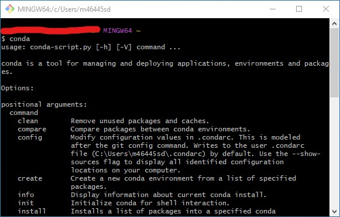

Get started with Jupyter Book
Contents
Get started with Jupyter Book#
This guide is supposed to provide start to end instructions on contributing to this web-based handbook on Windows 10 OS. Feel free to read this out of sequence and focus on the sections that are relevant to you.
Install Git Bash#
Get Anaconda#
At the time of writing this, the Jupyter Book package has been tested with Python 3.7 on Windows 101, with the latest Python version being 3.10.
We will use Anaconda as our package manager to specify which version of Python we want to run on.
Download Anaconda#
To download Anaconda, please visit the Anaconda product page, there you will find the appropriate distribution for your system. Usually, the download prompt shown below should have recognised your system, if not navigate to the bottom of the page or to the Anaconda archive to find the appropriate distribution for your system.
Attention
We have tested downloading on Google Chrome, Microsoft Edge and Firefox Internet Browsers. On Chrome and Edge, it might appear as if the download did not start. However, if you navigate to menu () → downloads you will find the download progressing2.

The Anaconda download display
Install Anaconda#
Locate the Anaconda installation file, this should be a .exe file if you are on Windows. Usually, it should be stored, by default settings in your internet browser, in the Downloads folder.
Steps:
Run the installer
Select
NextSelect
I Agreein the License AgreementSelect
Just Mewhen promptedClick
Nexton the Choose Install Location stepWarning
Check that the Destination Folder is on your local drive, usuallly under
C:\Users\<username>\Anaconda3.
It is recommended that you install Anaconda on your local, i.e. not connected to any network, drive, this is usually theC:drive for most University of Manchestert managed machines.
If you are using a machine provided by the University of Manchester do not install Anaconda on yourP:drive or OneDriveDo not add Anaconda to your PATH environment variables (we will do this later)
Check the box prompting you to register Anaconda3 as your default Python 3.9 (optional but recommended unless you’re planning to run multiple package managers)
Wait for Anaconda to finish installing and you are done!
Edit your PATH environment variables#
Begin with your Windows start menu ()
Type in
env, you should seeEdit the system environment variablesappear as the top optionClick on
Edit the system environment variablesThe
System Propertieswindow should pop up, navigate to theAdvancedtab, if you’re not already on itAt the bottom click on
Environment Variables...
The
Environment Variableswindow should open up, underSystem variablesfindPathHighlight
Pathand clickEdit..., theEdit environment variablewindow should openClick
Newand type the path to your Anaconda3 installation directory, this is usuallyC:\Users\<username>\Anaconda3
Click
Okto confirm the changes across all windows and you should be set!
Conda on Git Bash#
To check that Anaconda is properly installed on Git Bash follow the steps outlined below:
Open a Git Bash terminal
Type in
condaand press return ()If you get a menu like the one below then go to step 5, if not follow on from step 4
There are two ways you can proceed with this:
First way:
Open up
.bashrcwith your choice text editor (we will use notepad), this should be located inC:\Users\<username>If you can not locate you might need to turn on hidden file visibility:
On the top ribbon pane of
File Explorerhead to theViewtab and check the box withHidden itemsnext to it
In case the file does not exist open up notepad and save an empty file with the name
.bashrcin yourC:\Users\<username>directoryType
. /c/Users/<username>/Anaconda3/etc/profile.d/conda.shin your.bashrcfile
The second way:
Open up Git Bash and type, replacing
<username>with yours:echo '. /c/Users/<username>/Anaconda3/etc/profile.d/conda.sh' >> .bashrc
Anaconda sometimes will initialise the (base) environment whenever you open a new Git Bash (or any terminal), to stop this type:
conda config --set auto_activate_base false
You are all set to go!
(Optional) Pick your favourite IDE#
Integrated Development Environments (IDE) can be a very personal thing. Over the years some of the people on our team have used several setups from PyCharm to text editors such as Sublime Text or Atom accompanied by a detached terminal window. For what we demonstrate here we will use Visual Studio Code. If you are comfortable with your set up we do not recommend you change anything.
Install the Jupyter Book Environment#
Download the Jupyter Book environment by picture below, right-click and select Save link as...:

Clone the Repo and start contributing#
You can find a condensed version in the README accompanying the repository this handbook is hosted on